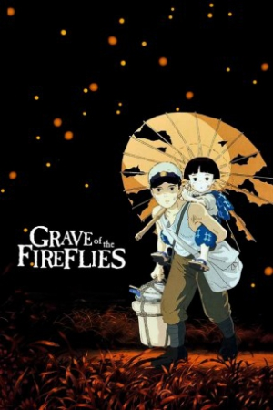

Also known as:火垂るの墓 (original title)
Country:Japan, 89 minutes
Spoken languages:Japanese
Genres:Animation, Drama, War
Director(s):Isao Takahata
Writer(s):Isao Takahata, Akiyuki Nosaka
Video Codec:Unknown
Number: 2751


Certification:PG-13
Storyline:
In the final months of World War II, 14-year-old Seita and his sister Setsuko are orphaned when their mother is killed during an air raid in Kobe, Japan. After a falling out with their aunt, they move into an abandoned bomb shelter. With no surviving relatives and their emergency rations depleted, Seita and Setsuko struggle to survive.
Cast:

Medium: Original DVD,
Comments: Part of Studio Ghibli Special Edition Collection
Loaned: No
Aspect ratio: Unknown